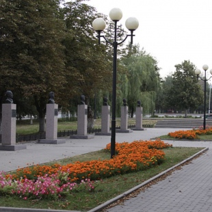
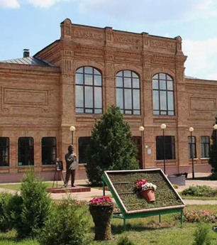

Памятник посвящен геройским событиям освобождения города Валуйки в 1943 году. В ходе Острогожско-Россошанской операции командиром 201-й танковой бригады И.А.Тарановым, был отдан приказ включить все осветительные приборы на всей без исключения технике, с целью ввести в заблуждение противника, мнимым превосходством.Белгородской области.
Мужской православный монастырь основан в конце XVI веку. ервым письменным упоминанием о монастыре является указ о начале восстановления царя Михаила Фёдоровича, датированный 1613 годом. По преданию, на берегу реки Валуй была найдена икона святителя Николая, которую дважды пытались принести в церковь в Валуйки, но она чудесным образом каждый раз оказывалась на прежнем месте.
Город Валуйки расположен на правом берегу реки Валуй – от этого гидронима и произошло его название. А «валуем» в курском и орловском наречиях называют малоподвижного, вялого и медлительного человека. Река Валуй, вероятно, получила свое название из-за медленного, неспешного течения.
Климат Валуек умеренный. Лето тёплое, нередко жаркое (особенно в июле и первой половине августа). Многолетние средние температуры: январь — минус 6,9 °C, июль — плюс 20,8 °C. Осадков выпадает около 544 мм в год. В последние десятилетия количество осадков несколько увеличилось (около 580 мм в год), а зимы стали теплее (средняя температура января — минус 5,2 °С).
Исторический герб Валуек утверждён 21 сентября 1781 года, восстановлен в 1859 году, повторно восстановлен 7 декабря 1995 года. Он представляет собой простой (неразделённый) щит французской формы и имеет следующее описание: «В зелёном поле пирамида из золотых яблок, в вольной части герб Белгородской области».Флаг города и района был официально принят Муниципальным советом в 2012 году.
Валуйский район располагается в лесостепной зоне. На его территории насчитывается больше 80 лесных урочищ, большинство из которых располагаются по правому берегу реки Оскол.
На территории Валуек можно встретить растения, включенные в Красную книгу Белгородской области. Среди них – зеленый дикранум, узкоклеточный эвринхиум, и морозниковый дремлик. Особенно охраняется здесь алтайский волчник – он находится под угрозой исчезновения и занесен в Красную книгу России.
Лесные массивы Валуек – одно из немногих мест Белгородской области, где обитает европейский лось. Численность этих животных сокращается, и чтобы сохранить популяцию, создали видовой заказник «Мандровский». Он охватывает не только Валуйки, но и Волоконовский и Красногвардейский районы.Также в местных лесах водится европейская косуля, лисица, волк, куница, горностай и хорь.
В разное время в здании размещались женская консультация, библиотека, музей, детская поликлиника. В начале XXI века дом признали аварийным и закрыли. В 2011 году здесь провели масштабную реконструкцию. Сегодня в историческом здании – памятнике архитектуры регионального значения – располагается Валуйская епархия.
Музей в 1964 году основал художник Александр Игнатьев, детство которого прошло в Валуйках. Экспозиция располагается в бывшем начальном училище. Его построили в начале XX века в стиле модерн – здание относится к памятникам истории и культуры регионального значения.